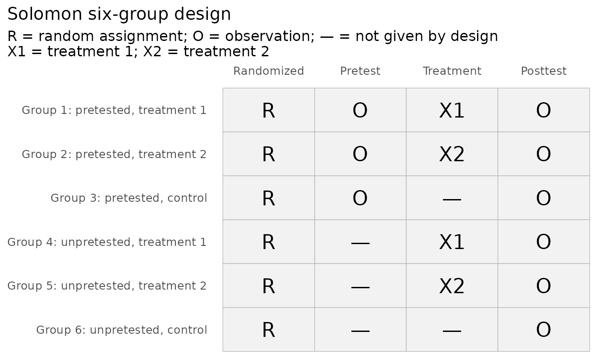
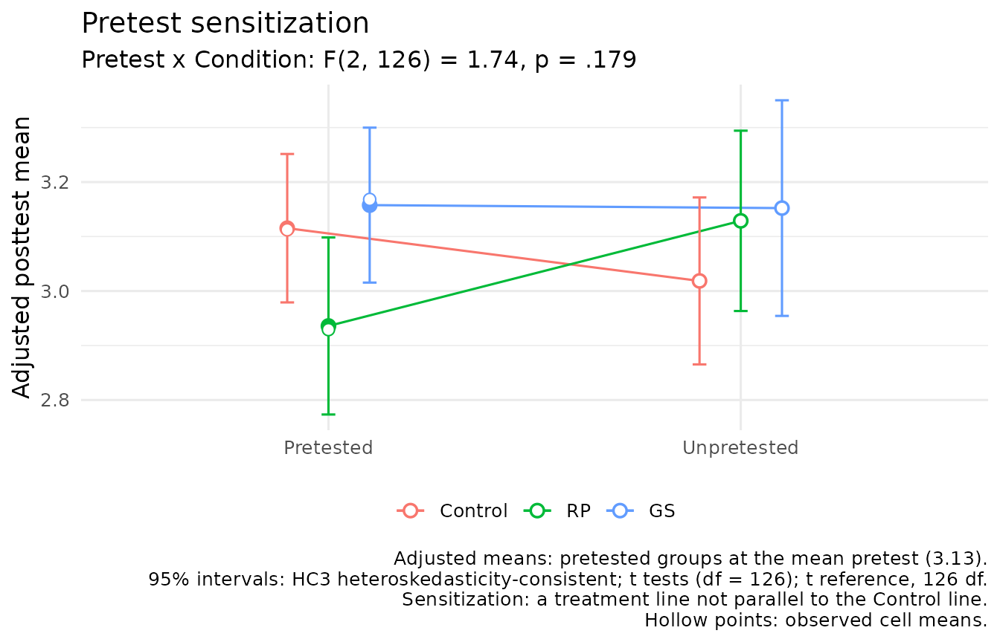
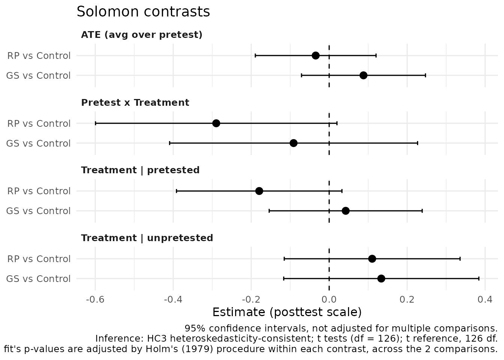

Designs With Several Treatments
Source:vignettes/articles/several-treatments.Rmd
several-treatments.RmdA Solomon design can compare more than one treatment. With k treatments and one control, each with and without a pretest, it has 2(k + 1) groups: six for two treatments and eight for three (Steyn, 2009). Edmonds and Kennedy (2017, pp. 93–101) call these Solomon six-group and eight-group designs. Two control groups serve every treatment, so the design needs fewer participants than a separate four-group study of each treatment (Steyn, 2009).
This article shows how to analyze such a design with solomonR:
- one model for all the groups, in place of a separate analysis for each pair of conditions;
- comparisons of each treatment with the control, with p-values adjusted for their number;
- planned comparisons, such as the main effects of two treatments crossed factorially;
- the sequence of tests that Steyn (2009) proposed.
The design
plot_solomon_design(treatments = 2)
The example is the study of Mai et al. (2020), bundled as
mai2020. Participants were randomly assigned to relapse
prevention (RP), goal setting (GS), or a
control condition, and to be pretested or not.
validate_solomon(post_behavior, condition, pretested, pre_behavior,
control = "Control", data = mai2020)
#> Solomon design validation: no errors found
#> Solomon N-group design: two treatments (RP, GS) and a control (Control), six groups
#>
#> Group Cell n Post missing Pre absent (design) Pre missing
#> 1 Pretested, RP 35 11 0 0
#> 2 Pretested, GS 33 10 0 0
#> 3 Pretested, Control 50 23 0 0
#> 4 Unpretested, RP 31 9 31 0
#> 5 Unpretested, GS 27 12 27 0
#> 6 Unpretested, Control 35 13 35 0
#> Pre unexpected
#> 0
#> 0
#> 0
#> 0
#> 0
#> 0
#>
#> [WARNING] 78 participant(s) are missing posttest scores and are excluded from
#> complete-case analyses; see check_solomon_missing().
#> [NOTE] Cell sizes range from 27 to 50.control names the control condition. solomonR never
guesses it from the order of the conditions.
Why one model
Published studies with several treatments analyzed them as overlapping four-group designs. Mai et al. (2020) ran three: relapse prevention against control, goal setting against control, and relapse prevention against goal setting. McCarthy and Tucker (2002) ran one for each of three treatments against the control. Each analysis tests the pretest-by-treatment interaction:
pairs <- list(c("RP", "Control"), c("GS", "Control"), c("RP", "GS"))
overlapping <- do.call(rbind, lapply(pairs, function(p) {
d <- subset(mai2020, condition %in% p & !is.na(post_behavior))
d$treat <- as.integer(d$condition == p[1])
a <- anova(lm(post_behavior ~ treat * pretested, data = d))
data.frame(comparison = paste(p, collapse = " vs "),
F = round(a["treat:pretested", "F value"], 3),
p = round(a["treat:pretested", "Pr(>F)"], 3))
}))
overlapping
#> comparison F p
#> 1 RP vs Control 3.461 0.066
#> 2 GS vs Control 0.240 0.626
#> 3 RP vs GS 1.522 0.221These are the F values of the authors’ Table 4. Two things make them hard to interpret together:
- The tests are dependent. Every group appears in two of the three analyses.
- Their number is not allowed for. Three tests at the .05 level reject at least one true null hypothesis more often than 5% of the time.
One model for all six groups asks the question once. Does pretesting change the effect of any treatment?
joint <- fit_solomon_glm(post_behavior, condition, pretested,
control = "Control", robust = "none", data = mai2020)
joint$omnibus
#> test statistic df1 df2 p.value reference
#> 1 Condition (avg over pretest) 1.2586197 2 127 0.28756431 F
#> 2 Pretest x Condition 1.8558342 2 127 0.16053677 F
#> 3 Condition | pretested 2.5864295 2 127 0.07925036 F
#> 4 Condition | unpretested 0.7027302 2 127 0.49714666 FThe Pretest x Condition test has two numerator degrees of freedom, one for each treatment. This fit uses the posttests alone and conventional standard errors, to match the analysis of variance in the article.
The joint model
By default the model also adjusts for the pretest in the pretested groups and uses HC3 standard errors, as for the four-group design:
fit <- fit_solomon_glm(post_behavior, condition, pretested, pre_behavior,
control = "Control", data = mai2020)
fit
#> Solomon GLM (unified model), N-group design
#> Conditions: RP, GS; control: Control. With and without a pretest: 6 groups.
#> Formula: y ~ (treat_RP + treat_GS) * pretested + pre_obs
#> Covariance: HC3 heteroskedasticity-consistent; t tests (df = 126)
#>
#> Omnibus tests
#> Test Statistic p
#> Condition (avg over pretest) F(2, 126) = 1.10 0.336
#> Pretest x Condition F(2, 126) = 1.74 0.179
#> Condition | pretested F(2, 126) = 2.23 0.112
#> Condition | unpretested F(2, 126) = 0.73 0.485
#>
#> Contrasts
#> Comparison Contrast Est (SE) t df p p adj. 95% CI
#> RP vs Control ATE (avg over pretest) -0.035 (0.078) -0.44 126 0.659 0.659 [-0.189, 0.120]
#> GS vs Control ATE (avg over pretest) 0.088 (0.080) 1.10 126 0.275 0.551 [-0.071, 0.247]
#> RP vs Control Pretest x Treatment -0.290 (0.156) -1.85 126 0.066 0.133 [-0.599, 0.020]
#> GS vs Control Pretest x Treatment -0.091 (0.161) -0.57 126 0.571 0.571 [-0.409, 0.227]
#> RP vs Control Treatment | pretested -0.179 (0.107) -1.67 126 0.097 0.193 [-0.392, 0.033]
#> GS vs Control Treatment | pretested 0.042 (0.099) 0.43 126 0.670 0.670 [-0.154, 0.239]
#> RP vs Control Treatment | unpretested 0.110 (0.114) 0.97 126 0.335 0.585 [-0.115, 0.336]
#> GS vs Control Treatment | unpretested 0.134 (0.126) 1.06 126 0.293 0.585 [-0.117, 0.384]
#>
#> p adj.: adjusted by Holm's (1979) procedure within each contrast, across the 2 comparisons.
#> Confidence intervals are not adjusted.
#>
#> Experimental: in the package's simulation study (issue #45), the omnibus
#> tests of Condition | pretested and Condition | unpretested rejected in up
#> to 6.9% of replications at the .05 level with three treatments and 10
#> participants per group. No other test, and no family of adjusted
#> comparisons, failed the study's rule. See ?fit_solomon_glm.The output has three parts:
- Omnibus tests. Each asks whether the conditions differ on one contrast.
- Contrasts. The four Solomon contrasts of the four-group design, for each treatment against the control.
- Adjusted p-values. Each contrast’s p-values are adjusted across the comparisons by Holm’s (1979) procedure, which controls the chance of at least one false rejection in that family. The confidence intervals are not adjusted.
contrasts = "pairwise" adds the comparisons between
treatments:
pairwise <- fit_solomon_glm(post_behavior, condition, pretested, pre_behavior,
control = "Control", contrasts = "pairwise",
data = mai2020)
subset(pairwise$effects, contrast == "Pretest x Treatment",
c(comparison, estimate, std.error, p.value, p.adjusted))
#> comparison estimate std.error p.value p.adjusted
#> 4 RP vs Control -0.28968740 0.1564621 0.06644082 0.1993225
#> 5 GS vs Control -0.09127948 0.1606832 0.57099764 0.5709976
#> 6 RP vs GS -0.19840792 0.1704058 0.24649181 0.4929836Only 133 of the 211 participants gave a posttest, and the loss differed by group:
check_solomon_missing(post_behavior, condition, pretested, pre_behavior,
control = "Control", data = mai2020)
#> Solomon missingness check
#> Solomon N-group design: two treatments (RP, GS) and a control (Control), six groups
#> Pattern: structural pretest absence and incidental missingness
#>
#> Group Cell n Post missing Pre absent (design) Pre missing
#> 1 Pretested, RP 35 11 0 0
#> 2 Pretested, GS 33 10 0 0
#> 3 Pretested, Control 50 23 0 0
#> 4 Unpretested, RP 31 9 31 0
#> 5 Unpretested, GS 27 12 27 0
#> 6 Unpretested, Control 35 13 35 0
#> Pre unexpected
#> 0
#> 0
#> 0
#> 0
#> 0
#> 0
#>
#> Structural pretest absence (n = 93)
#> Participants assigned to the unpretested groups were never pretested; the
#> absence of a pretest is the experimental manipulation.
#> Response: Do not impute. Use analyses that respect the design, such as
#> fit_solomon_glm(), fit_solomon_ml(), fit_solomon_classic(), or SEM.
#> Unlike planned missing-data designs, where unmeasured values exist and
#> can be imputed, an imputed pretest here would describe a measurement that
#> never occurred.
#> Sources: Solomon (1949); Graham et al. (2006)
#>
#> Incidental posttest missingness (n = 78)
#> Posttest scores are missing, so these participants are excluded from
#> complete-case analyses.
#> Response: Complete-case analysis is unbiased when missingness is unrelated
#> to the outcome given the variables in the model. Report missingness by
#> cell, because attrition that differs across the six groups can undermine
#> the randomized comparisons, and consider sensitivity analyses if
#> missingness may depend on the unobserved outcome.
#> Sources: Rubin (1976); Little & Rubin (2019)Plots
plot_sensitization() shows the model’s posttest means by
pretest condition, one line per condition. Lines that are not parallel
to the control’s indicate sensitization.
plot_sensitization(fit)
plot_solomon_effects() shows every contrast with its
confidence interval:
plot_solomon_effects(fit)
Planned comparisons: a factorial design
McCarthy and Tucker’s (2002) eight groups crossed two treatments, a lecture and a service-learning project, with pretesting: students received the lecture, the project, both, or neither. In such a design the questions of interest are the main effect of each treatment and their interaction, not only each condition against the control. Give them as weights over the conditions. The data here are simulated with known effects: the lecture adds 2 points, the project 4, and together they add 9.
d <- simulate_solomon(n = 40, delta = c(Lecture = 2, Service = 4, Both = 9),
rho = 0.5, sigma = 10, mean = 50, seed = 2002)
factorial <- fit_solomon_glm(
y_post, treat, pretested, y_pre, control = "Control", data = d,
contrasts = list(
"Lecture (main effect)" = c(Lecture = 0.5, Both = 0.5, Service = -0.5, Control = -0.5),
"Service (main effect)" = c(Service = 0.5, Both = 0.5, Lecture = -0.5, Control = -0.5),
"Lecture x Service" = c(Both = 1, Lecture = -1, Service = -1, Control = 1)
)
)
shown <- subset(factorial$effects,
contrast %in% c("ATE (avg over pretest)", "Pretest x Treatment"),
c(comparison, contrast, estimate, std.error, p.adjusted))
shown$p.adjusted <- round(shown$p.adjusted, 3)
print(shown, digits = 3, row.names = FALSE)
#> comparison contrast estimate std.error p.adjusted
#> Lecture (main effect) ATE (avg over pretest) 3.638 1.02 0.001
#> Service (main effect) ATE (avg over pretest) 6.726 1.01 0.000
#> Lecture x Service ATE (avg over pretest) 6.406 2.03 0.002
#> Lecture (main effect) Pretest x Treatment 0.134 2.03 0.947
#> Service (main effect) Pretest x Treatment -2.753 2.03 0.527
#> Lecture x Service Pretest x Treatment 3.607 4.05 0.748The true main effects are 3.5 points for the lecture and 5.5 for the project, and the true interaction is 3. With 40 participants per group the estimates carry sampling error: in this data set the interaction is estimated at more than one standard error above its true value. Each comparison also has a Pretest x Treatment row: the difference in that comparison between pretested and unpretested participants. Its true value is zero here, because the data were simulated without sensitization; the estimates in those rows differ from zero only by sampling error. The weights of a comparison must sum to zero.
A published eight-group study
Steyn (2005) ran the eight-group study that Steyn (2009) describes:
three treatments and a control, each with and without a pretest, with
1,723 police trainees. Each treatment gave participants more information
about their own ability, and the outcome was a questionnaire of
self-efficacy perceptions. The thesis reports each group’s size, mean,
and standard deviation (pp. 151–152), bundled as steyn2005.
solomon_from_summary() analyzes a design from those
statistics:
steyn2005[, c("group", "condition", "pretested", "n", "mean", "sd")]
#> group condition pretested n mean sd
#> 1 EG1 Norms 1 218 155.895 13.263
#> 2 EG2 Marking 1 214 156.196 12.545
#> 3 EG3 Test 1 219 156.142 13.396
#> 4 KG2 Control 1 218 158.917 13.264
#> 5 KG1.1 Norms 0 214 154.827 12.324
#> 6 KG1.2 Marking 0 211 155.739 12.830
#> 7 KG1.3 Test 0 220 153.036 12.628
#> 8 KG3 Control 0 209 158.306 11.878
with(steyn2005, solomon_from_summary(n, mean, sd, treat = condition,
pretested = pretested, control = "Control"))
#> Solomon analysis from summary statistics, N-group design
#> --------------------------------------------------------
#> Conditions: Norms, Marking, Test; control: Control. With and without a pretest: 8 groups.
#> Pooled error variance: 163.370 on 1715 df (equal variances assumed)
#>
#> Two-way ANOVA on the posttest (Type III sums of squares)
#> Condition SS = 3937.177 df = 3 F = 8.03 p < .001
#> Pretest SS = 739.550 df = 1 F = 4.53 p = 0.034
#> Pretest x Condition SS = 489.696 df = 3 F = 1.00 p = 0.392
#> Error SS = 280179.215 df = 1715
#>
#> Contrasts with 95% confidence intervals
#> Comparison Contrast Est (SE) t df p p adj. 95% CI
#> Norms vs Control ATE (avg over pretest) -3.251 (0.872) -3.73 1715 <.001 <.001 [-4.961, -1.540]
#> Marking vs Control ATE (avg over pretest) -2.644 (0.876) -3.02 1715 0.003 0.003 [-4.362, -0.926]
#> Test vs Control ATE (avg over pretest) -4.023 (0.869) -4.63 1715 <.001 <.001 [-5.727, -2.318]
#> Norms vs Control Pretest x Treatment 0.457 (1.745) 0.26 1715 0.793 1.000 [-2.965, 3.879]
#> Marking vs Control Pretest x Treatment -0.154 (1.752) -0.09 1715 0.930 1.000 [-3.590, 3.282]
#> Test vs Control Pretest x Treatment 2.495 (1.738) 1.44 1715 0.151 0.454 [-0.913, 5.903]
#> Norms vs Control Treatment | pretested -3.022 (1.224) -2.47 1715 0.014 0.041 [-5.423, -0.621]
#> Marking vs Control Treatment | pretested -2.721 (1.230) -2.21 1715 0.027 0.047 [-5.133, -0.309]
#> Test vs Control Treatment | pretested -2.775 (1.223) -2.27 1715 0.023 0.047 [-5.173, -0.377]
#> Norms vs Control Treatment | unpretested -3.479 (1.243) -2.80 1715 0.005 0.010 [-5.917, -1.041]
#> Marking vs Control Treatment | unpretested -2.567 (1.247) -2.06 1715 0.040 0.040 [-5.014, -0.120]
#> Test vs Control Treatment | unpretested -5.270 (1.235) -4.27 1715 <.001 <.001 [-7.692, -2.848]
#>
#> p adj.: adjusted by Holm's (1979) procedure within each contrast, across the 3 comparisons.
#> Confidence intervals are not adjusted.The thesis analyzed the study as overlapping four-group designs and then compared the eight posttest means. The joint model gives one test of sensitization, the Pretest x Condition row, and the comparisons of each treatment with the control. All three treatments lowered the scores.
Two cautions apply to this reanalysis, as to the original analysis. Existing classes, not participants, were allocated to the eight groups, and not at random (Steyn, 2005, pp. 105–106). The analysis treats participants as the units, so it does not allow for the classes.
Steyn’s (2009) sequence of tests
Steyn (2009) proposed a sequence of tests for these designs, in two parts:
- Checks of internal validity. Whether the pretested groups were equivalent before treatment; history and maturation; the effect of testing; the pretest-intervention interaction; reliability and instrumentation; regression to the mean; and attrition.
- The effects of the treatments. A one-way analysis of variance of all the posttests, then of the treatment groups, with post hoc tests.
fit_solomon_steyn() carries it out and labels each step.
Its post hoc tests are Scheffé’s (1953) tests, which Steyn (2005,
p. 153) used:
steyn <- fit_solomon_steyn(post_behavior, condition, pretested, pre_behavior,
control = "Control", data = mai2020)
steyn
#> Steyn's (2009) analysis of the extended Solomon design (a published proposal; the package's recommended analysis is fit_solomon_glm())
#> Follows a pre-publication draft of the article.
#> Interventions: RP, GS; control: Control. With and without a pretest: 6 groups. alpha = 0.05.
#>
#> Groups
#> Group Condition Pretested Pretest Posttest n Posttests
#> EG1 RP yes Oa1 Ob1 35 24
#> EG2 GS yes Oa2 Ob2 33 23
#> CG1 Control yes Oc Od 50 27
#> CG2.1 RP no - Oe1 31 22
#> CG2.2 GS no - Oe2 27 15
#> CG3 Control no - Of 35 22
#>
#> 1. Equivalence after randomization
#> Groups Test Estimate Statistic p
#> Oa1, Oa2, Oc One-way ANOVA F(2, 115) = 0.78 0.459
#> No significant difference between the pretested groups at pretest.
#>
#> 2. History and maturation
#> Groups Test Estimate Statistic p p adj.
#> Od vs Oc, paired Paired t test -0.010 t(26) = -0.13 0.901
#> Of vs Oa1 + Oa2 + Oc t test (pooled variance) -0.142 t(138) = -1.75 0.083
#> Oc, Od, Of One-way ANOVA (scores as independent) F(2, 96) = 0.78 0.462
#> Oc vs Od Pairwise (pooled SD, Scheffe) 0.016 t(96) = 0.19 0.851 0.982
#> Oc vs Of Pairwise (pooled SD, Scheffe) 0.109 t(96) = 1.23 0.223 0.474
#> Od vs Of Pairwise (pooled SD, Scheffe) 0.094 t(96) = 0.94 0.351 0.646
#> Oc and Od do not differ (paired t test). The pretests and Of do not differ.
#> The one-way ANOVA of Oc, Od, and Of finds no evidence of history,
#> maturation, or a testing effect.
#>
#> 3. Testing effect: two-way between-groups ANOVA (Type III)
#> Comparison Term SS Statistic p
#> RP vs Control Pretest 0.066 F(1, 91) = 0.45 0.504
#> RP vs Control Intervention 0.031 F(1, 91) = 0.21 0.645
#> RP vs Control Interaction 0.508 F(1, 91) = 3.46 0.066
#> GS vs Control Pretest 0.063 F(1, 83) = 0.48 0.492
#> GS vs Control Intervention 0.186 F(1, 83) = 1.42 0.237
#> GS vs Control Interaction 0.031 F(1, 83) = 0.24 0.626
#> RP vs Control: no pretest main effect. GS vs Control: no pretest main
#> effect.
#>
#> 4. Pretest-intervention interaction: Tests A-I (Walton Braver & Braver, 1988)
#> Comparison Test A p Path
#> RP vs Control F(1, 91) = 3.46 0.066 A -> D -> E -> H -> I
#> GS vs Control F(1, 83) = 0.24 0.626 A -> D -> E -> H -> I
#> RP vs Control (path A -> D -> E -> H -> I): Historical pathway: no
#> treatment test in the selected A-I sequence reaches the specified alpha
#> level. GS vs Control (path A -> D -> E -> H -> I): Historical pathway: no
#> treatment test in the selected A-I sequence reaches the specified alpha
#> level.
#>
#> 5. Test-retest reliability and instrumentation
#> Step Groups Test Estimate Statistic p
#> Reliability Oc with Od Pearson r (test-retest) 0.247 t(25) = 1.28 0.213
#> Instrumentation Od vs Oc, paired Paired t test -0.010 t(26) = -0.13 0.901
#> Instrumentation Of vs Oc t test (pooled variance) -0.109 t(70) = -1.24 0.221
#> Test-retest r = 0.25 (n = 27). Oc and Od do not differ. Oc and Of do not
#> differ.
#>
#> 6. Regression to the mean: chi-square test for the variance
#> Groups Var(Oc) Var(Od) Ratio Statistic p
#> Od vs Oc, paired controls 0.095 0.126 1.33 chi2(26) = 34.59 0.242
#> The variance changed from 0.09496 (Oc) to 0.1263 (Od), a ratio of 1.33; the
#> change is not significant.
#>
#> 7. Attrition
#> Group Condition Randomized Observed Missing Rate
#> EG1 RP 35 24 11 31.4%
#> EG2 GS 33 23 10 30.3%
#> CG1 Control 50 27 23 46.0%
#> CG2.1 RP 31 22 9 29.0%
#> CG2.2 GS 27 15 12 44.4%
#> CG3 Control 35 22 13 37.1%
#>
#> Groups Test Estimate Statistic p
#> EG1 + EG2 + CG2.1 + CG2.2 vs CG1 + CG3 Two-proportion z test -0.090 z = -1.33 0.183
#> Dropouts: intervention by pretested Chi-square (2 x 2 dropouts) chi2(1) = 1.52 0.218
#> 78 of 211 participants (37.0%) have no posttest. Dropout was 33.3% with an
#> intervention and 42.4% without; the difference is not significant. Steyn's
#> chi-square: intervention and pretesting are not significantly associated
#> among the dropouts.
#>
#> 8. Effects of the interventions
#> Step Groups Test Estimate Statistic p p adj.
#> E1 Ob1, Ob2, Od, Oe1, Oe2, Of One-way ANOVA F(5, 127) = 1.34 0.251
#> E3 Ob1, Ob2, Oe1, Oe2 One-way ANOVA F(3, 80) = 1.83 0.148
#> E4 Ob1 vs Oe1 t test (pooled variance) -0.200 t(44) = -1.65 0.107
#> E4 Ob2 vs Oe2 t test (pooled variance) 0.016 t(36) = 0.13 0.898
#> E5 Ob1 + Oe1, Ob2 + Oe2 One-way ANOVA, groups combined F(1, 82) = 2.50 0.118
#> E5 Ob1 + Oe1 vs Ob2 + Oe2 Pairwise (pooled SD, Scheffe) -0.137 t(82) = -1.58 0.118 0.118
#> Steps not on the decision path are shown for completeness.
#>
#> E2: intervention groups against Od and Of (Scheffé tests)
#> Group Condition Mean p vs Od p vs Of Differs from both
#> Ob1 RP 2.929 0.707 0.986 no
#> Ob2 GS 3.168 0.998 0.882 no
#> Oe1 RP 3.129 1.000 0.968 no
#> Oe2 GS 3.152 1.000 0.953 no
#>
#> Decision path: E1
#> E1: the posttest groups do not differ, so Steyn's sequence finds no
#> evidence that the interventions had an effect.The sequence is included because it is the published proposal for these designs. It is not the package’s recommended analysis, for three reasons:
- It runs many tests. Steyn (2009) notes that several analyses of variance capitalize on chance.
- It tests sensitization one treatment at a time. Step 4 tests the Pretest x Intervention interaction for each treatment against the control, in overlapping four-group analyses, each at the nominal level. Its later comparison of each treatment’s pretested and unpretested groups (E4) mixes the effect of the pretest itself with sensitization. The joint model gives one Pretest x Condition test for all the treatments, and a Pretest x Treatment contrast for each with adjusted p-values.
- Some of its tests treat paired scores as independent. The help page lists these under “Cautions”.
R. Steyn (personal communication, September 30, 2026) notes that the model his article proposes is intended for situations with a large amount of data and ample time. solomonR follows a pre-publication draft of Steyn’s article, which the author provided (R. Steyn, personal communication, September 30, 2026). The published article was not available for comparison. The help page lists every choice solomonR made where the description leaves room.
Reporting
report_solomon() writes the method and results with
their references:
report_solomon(fit)
#> The design was a Solomon N-group design, the extension of the four-group
#> design (Solomon, 1949) to several treatments (Steyn, 2009): two treatments
#> (RP and GS) and a control (Control), each with and without a pretest, giving
#> six groups. The numbers of participants analyzed in the pretested RP,
#> pretested GS, pretested Control, unpretested RP, unpretested GS, and
#> unpretested Control groups were 24, 23, 27, 22, 15, and 22, respectively.
#>
#> Posttest outcomes of the six groups were analyzed jointly with a linear model
#> containing an indicator for each treatment, pretesting, and their
#> interactions, adjusting for the pretest score among pretested participants
#> (Lin, 2013), with HC3 heteroskedasticity-consistent standard errors
#> (MacKinnon & White, 1985; Long & Ervin, 2000). Omnibus Wald F tests examined
#> whether the differences between the conditions depended on pretesting (the
#> Pretest x Condition interaction) and whether the conditions differed when
#> averaged over pretest conditions. Each treatment was compared with the
#> control (RP vs Control and GS vs Control), and the Solomon contrasts were
#> estimated for each comparison. Within each contrast, the p-values of the two
#> comparisons were adjusted with Holm's (1979) procedure; the confidence
#> intervals were not adjusted.
#>
#> The omnibus test of the Pretest x Condition interaction (pretest
#> sensitization) gave F(2, 126) = 1.74, p = .179, and the omnibus test of the
#> conditions, averaged over pretest conditions, gave F(2, 126) = 1.10, p =
#> .336.
#> The average treatment effect of RP relative to Control across pretest
#> conditions was -0.03, 95% CI [-0.19, 0.12], t(126) = -0.44, p = .659,
#> Holm-adjusted. The Pretest x Treatment interaction (pretest sensitization)
#> for RP relative to Control was -0.29, 95% CI [-0.60, 0.02], t(126) = -1.85, p
#> = .133, Holm-adjusted. The treatment effect of RP relative to Control among
#> pretested participants was -0.18, 95% CI [-0.39, 0.03], t(126) = -1.67, p =
#> .193, Holm-adjusted. The treatment effect of RP relative to Control among
#> unpretested participants was 0.11, 95% CI [-0.12, 0.34], t(126) = 0.97, p =
#> .585, Holm-adjusted.
#> The average treatment effect of GS relative to Control across pretest
#> conditions was 0.09, 95% CI [-0.07, 0.25], t(126) = 1.10, p = .551,
#> Holm-adjusted. The Pretest x Treatment interaction (pretest sensitization)
#> for GS relative to Control was -0.09, 95% CI [-0.41, 0.23], t(126) = -0.57, p
#> = .571, Holm-adjusted. The treatment effect of GS relative to Control among
#> pretested participants was 0.04, 95% CI [-0.15, 0.24], t(126) = 0.43, p =
#> .670, Holm-adjusted. The treatment effect of GS relative to Control among
#> unpretested participants was 0.13, 95% CI [-0.12, 0.38], t(126) = 1.06, p =
#> .585, Holm-adjusted.
#>
#> References
#>
#> Holm, S. (1979). A simple sequentially rejective multiple test procedure.
#> Scandinavian Journal of Statistics, 6(2), 65–70.
#> https://www.jstor.org/stable/4615733
#>
#> Lin, W. (2013). Agnostic notes on regression adjustments to experimental
#> data: Reexamining Freedman's critique. The Annals of Applied Statistics,
#> 7(1), 295–318. https://doi.org/10.1214/12-AOAS583
#>
#> Long, J. S., & Ervin, L. H. (2000). Using heteroscedasticity consistent
#> standard errors in the linear regression model. The American
#> Statistician, 54(3), 217–224.
#> https://doi.org/10.1080/00031305.2000.10474549
#>
#> MacKinnon, J. G., & White, H. (1985). Some heteroskedasticity-consistent
#> covariance matrix estimators with improved finite sample properties.
#> Journal of Econometrics, 29(3), 305–325.
#> https://doi.org/10.1016/0304-4076(85)90158-7
#>
#> Solomon, R. L. (1949). An extension of control group design. Psychological
#> Bulletin, 46(2), 137–150. https://doi.org/10.1037/h0062958
#>
#> Steyn, R. (2009). Re-designing the Solomon four-group: Can we improve on this
#> exemplary model? Design Principles and Practices: An International
#> Journal—Annual Review, 3(1), 383–394.
#> https://doi.org/10.18848/1833-1874/CGP/v03i01/37588How well the joint model performs
The joint model was checked in a simulation study with two or three treatments and 10 to 50 participants per group, under a protocol posted before the study was run. The article Designs With Several Treatments: Validating the Joint Model reports it. In summary:
- Contrasts. They were unbiased, and coverage of their 95% intervals was 0.939 to 0.967.
- Adjusted comparisons. The chance of at least one false rejection in a family of Holm-adjusted comparisons was at most 0.059.
- Pretest x Condition test. It rejected a true null hypothesis in 0.036 to 0.055 of replications.
- Two omnibus tests at the smallest size. With three treatments and 10 participants per group, the omnibus tests of Condition | pretested and Condition | unpretested rejected in 0.055 to 0.069 of replications at the .05 level. The study’s rule for error control was therefore not met, and the analysis of designs with several treatments is labeled experimental. With groups that small, judge those two questions by the adjusted comparisons.
- Overlapping four-group analyses. When no treatment was sensitized, at least one of the separate interaction tests was significant in 8% to 22% of replications.
What needs a four-group design
The joint model, the design checks, the plots above,
baseline_solomon(), equivalence_solomon(),
solomon_from_summary(), and simulate_solomon()
accept designs with several treatments. The other analyses take one
treatment and a control, and say so when given more: full-information
maximum likelihood, the historical test sequence, randomization tests,
marginal contrasts, structural equation models, multiple imputation, and
repeated posttests. To use one of them, analyze one treatment and the
control at a time:
rp <- subset(mai2020, condition %in% c("RP", "Control") & !is.na(post_behavior))
rp$treat <- as.integer(rp$condition == "RP")
fit_solomon_ml(post_behavior, treat, pretested, pre_behavior,
inference = "satterthwaite", data = rp)$effects[, 1:5]
#> contrast estimate std.error statistic p.value
#> 1 ATE (avg over pretest) -0.03467472 0.07605652 -0.4559072 0.64957579
#> 2 Pretest x Treatment -0.28983011 0.15211304 -1.9053600 0.05998705
#> 3 Treatment | pretested -0.17958977 0.10365751 -1.7325303 0.08960087
#> 4 Treatment | unpretested 0.11024033 0.11132609 0.9902470 0.32772427References
Edmonds, W. A., & Kennedy, T. D. (2017). An applied guide to research designs: Quantitative, qualitative, and mixed methods (2nd ed.). SAGE Publications. https://doi.org/10.4135/9781071802779
Holm, S. (1979). A simple sequentially rejective multiple test procedure. Scandinavian Journal of Statistics, 6(2), 65–70. https://www.jstor.org/stable/4615733
Mai, N. N., Takahashi, Y., & Oo, M. M. (2020). Testing the effectiveness of transfer interventions using Solomon four-group designs. Education Sciences, 10(4), Article 92. https://doi.org/10.3390/educsci10040092
McCarthy, A. M., & Tucker, M. L. (2002). Encouraging community service through service learning. Journal of Management Education, 26(6), 629–647. https://doi.org/10.1177/1052562902238322
Scheffé, H. (1953). A method for judging all contrasts in the analysis of variance. Biometrika, 40(1–2), 87–104. https://doi.org/10.1093/biomet/40.1-2.87
Steyn, R. (2005). Self-evaluasie en die vorming van selfdoeltreffendheidspersepsies [Self-evaluation and the forming of self-efficacy perceptions] [Doctoral thesis, University of South Africa]. Unisa Institutional Repository. https://hdl.handle.net/10500/1745
Steyn, R. (2009). Re-designing the Solomon four-group: Can we improve on this exemplary model? Design Principles and Practices: An International Journal—Annual Review, 3(1), 383–394. https://doi.org/10.18848/1833-1874/CGP/v03i01/37588